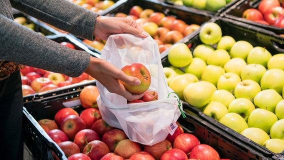

Sport |
Börse |
Wissen |
|  | ||
FC Köln gegen BVB vor Mammutaufgabe |
Plastikmüll beim Einkauf vermeiden |
Lange Hälse auf der Roten Liste |
Zum Heimauftakt des 1. FC Köln kommt niemand geringeres als der deutsche Vizemeister in die Domstadt. Der Aufsteiger um den neuen Trainer Achim Beierlorzer steht am Freitagabend (23.08.2019, 20.30 Uhr) vor einer Mammutaufgabe gegen stark gestartete Westfalen. |
Gurken, Limetten und Paprika in Folie, Schnittkäse und Aufschnitt in Plastikverpackungen, Joghurt in Kunststoffbechern. Wer Lebensmittel einkauft und zu Hause auspackt, steht meist vor einem ordentlichen Plastikberg. Jeder Bundesbürger sorgt im Schnitt für 40 Kilogramm |
Die Zahl der Giraffen ist innerhalb von 30 Jahren um 40 Prozent gesunken. Nur noch knapp 100.000 Langhälse streifen durch die Savannen. Seit 2016 stehen sie als "gefährdet" auf der Roten Liste. Jetzt wird auch der Handel verboten. |